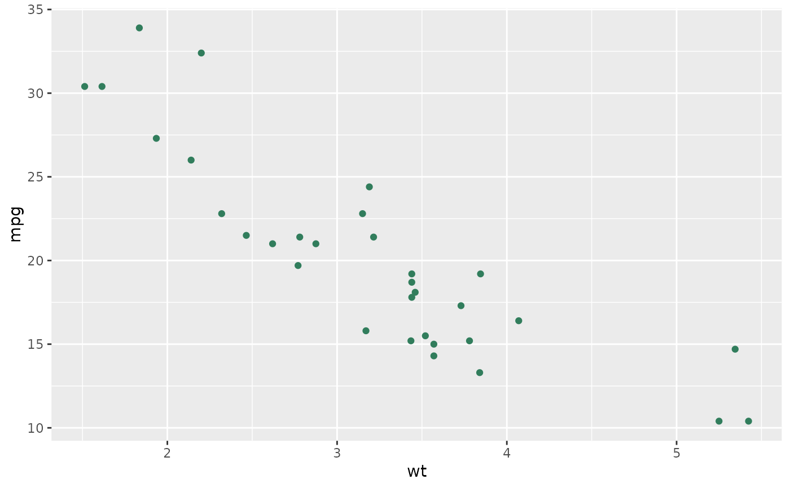
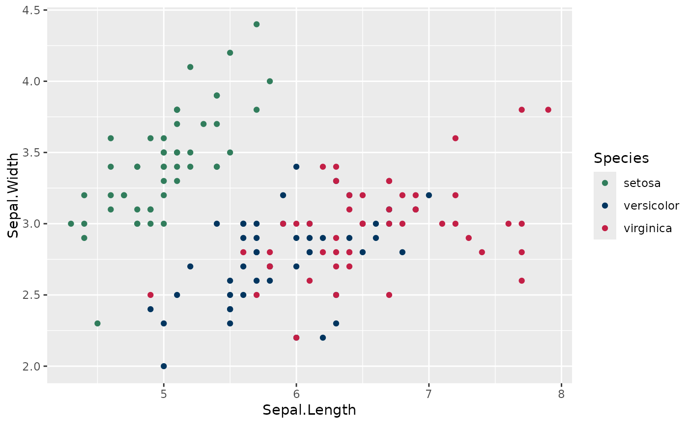
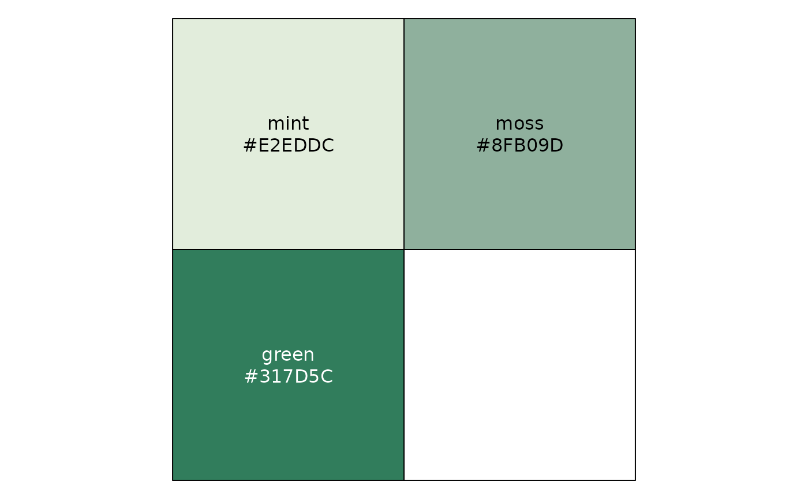
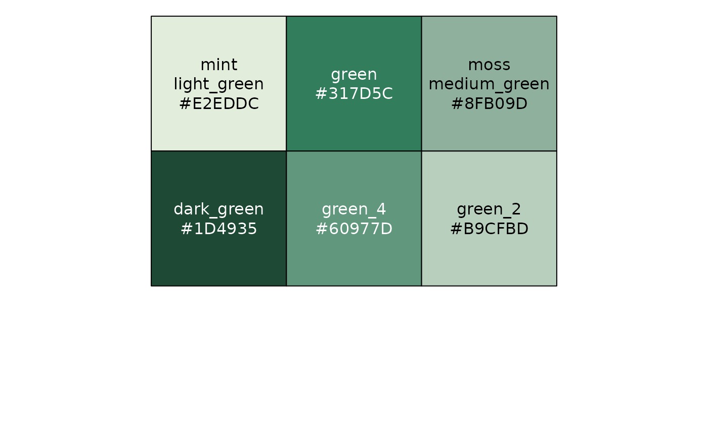
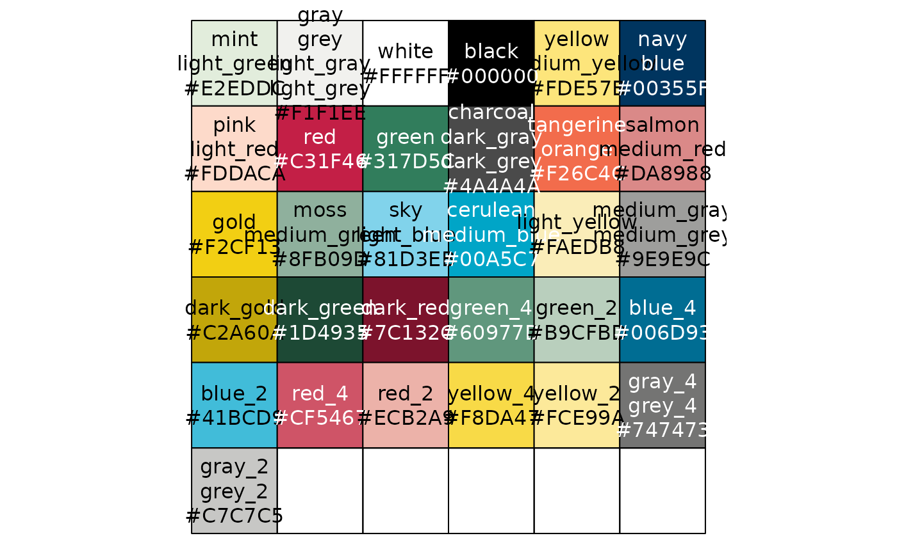

Translate human friendly TNTP brand color names like "medium_blue" into
accurate hex values for use in plotting. This function can also be used to
show a named vector of all available TNTP brand colors and values. Use
show_tntp_colors() to quickly visualize selected colors in the plot window.
For often used palettes of TNTP colors, see tntp_palette().
Usage
tntp_colors(...)
show_tntp_colors(
...,
pattern = NULL,
labels = TRUE,
borders = NULL,
cex_label = 1,
ncol = NULL
)Arguments
- ...
Supply quoted TNTP color names to return. If no colors are specified, returns all available colors.
- pattern
Optional regular expression. If provided, will return only brand colors that match the regular expression
- labels
Logical. Label colors with names and hex values?
- borders
Border color for each tile. Default uses
par("fg"). Useborder = NAto omit borders.- cex_label
Size of printed labels, as multiplier of default size.
- ncol
Number of columns. If not supplied, tries to be as square as possible.
Examples
library(ggplot2)
# Use tntp_colors() to retrieve a single color...
ggplot(mtcars, aes(wt, mpg)) +
geom_point(color = tntp_colors('green'))

#... multiple colors ...
ggplot(iris, aes(Sepal.Length, Sepal.Width, color = Species)) +
geom_point() +
scale_color_manual(values = tntp_colors('green', 'navy', 'red'))

#... or a list of all possible TNTP brand colors
tntp_colors()
#> mint|light_green gray|grey|light_gray|light_grey
#> "#E2EDDC" "#F1F1EE"
#> white black
#> "#FFFFFF" "#000000"
#> yellow|medium_yellow navy|blue
#> "#FDE57B" "#00355F"
#> pink|light_red red
#> "#FDDACA" "#C31F46"
#> green charcoal|dark_gray|dark_grey
#> "#317D5C" "#4A4A4A"
#> tangerine|orange salmon|medium_red
#> "#F26C4C" "#DA8988"
#> gold moss|medium_green
#> "#F2CF13" "#8FB09D"
#> sky|light_blue cerulean|medium_blue
#> "#81D3EB" "#00A5C7"
#> light_yellow medium_gray|medium_grey
#> "#FAEDB8" "#9E9E9C"
#> dark_gold dark_green
#> "#C2A60A" "#1D4935"
#> dark_red green_4
#> "#7C132C" "#60977D"
#> green_2 blue_4
#> "#B9CFBD" "#006D93"
#> blue_2 red_4
#> "#41BCD9" "#CF5467"
#> red_2 yellow_4
#> "#ECB2A9" "#F8DA47"
#> yellow_2 gray_4|grey_4
#> "#FCE99A" "#747473"
#> gray_2|grey_2
#> "#C7C7C5"
# Use show_tntp_colors() to quickly see brand colors in the plotting window
show_tntp_colors('mint', 'moss', 'green')

# You can also use a pattern to return similar colors
show_tntp_colors(pattern = 'green')

# You can see all colors (and names) by running it with no arguments
show_tntp_colors()
